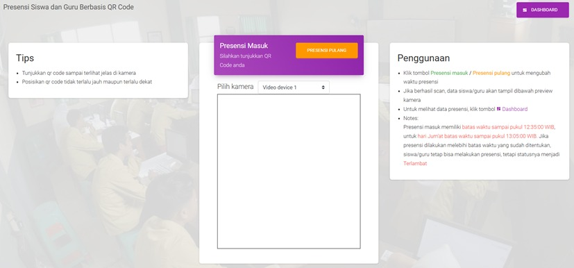

My Projects
Berikut adalah beberapa projek yang telah saya kerjakan:
Desain Infografis
Infografis edukatif bertema budaya Indonesia yang menampilkan kekayaan adat dan seni melalui visualisasi menarik.

Presensi QR Code
Aplikasi presensi digital berbasis web dengan pemindaian QR menggunakan kamera langsung, praktis dan modern.
Sensor Api IOT
Sistem deteksi api berbasis Arduino dan sensor, dilengkapi antarmuka web sederhana untuk monitoring real-time.